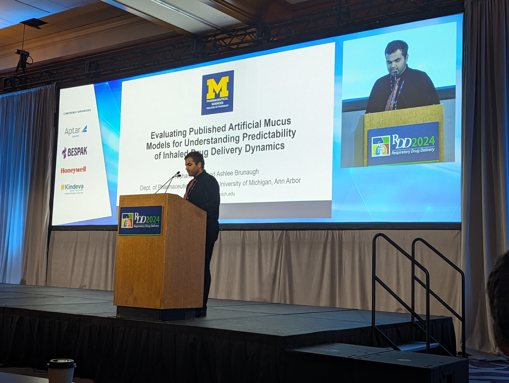
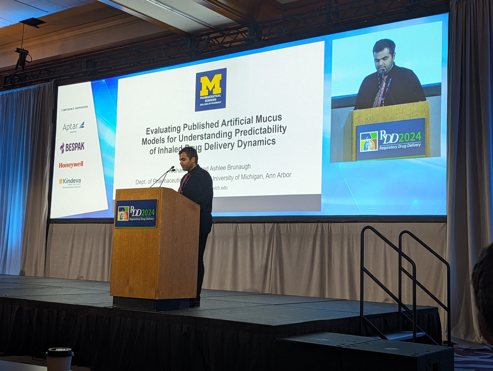

Our Research Vision
Our lab is dedicated to improving therapeutic delivery by understanding and leveraging the natural properties of mucosal barriers, particularly in the respiratory tract, and by designing systems that align with the inherent tendencies of drugs and biological environments.
Our Lab in Action

 

Our Major Research Areas

Research Area 1: Tailored Drug Release for Enhanced Pharmacological Activity in the Respiratory Mucosa
We design drug delivery systems that optimize release profiles to align with the pharmacokinetics (PK), pharmacodynamics (PD), and degradation rate of drugs to ensure enhanced pharmacological effects in the respiratory mucosa.

Research Area 2: Mitigating Spatial Heterogeneity in Mucosal Drug Distribution
We focus on addressing spatial variability in drug distribution caused by interactions with mucus components, ensuring uniform delivery and enhanced therapeutic outcomes.

Research Area 3: Modulating the Airway Mucus Barrier
We engineer delivery systems to modify mucus properties, improving clearance efficiency, therapeutic retention, and barrier function.

Research Area 4: Multifunctional Excipients for Inhaled Drug Delivery
We develop and repurpose excipients to simultaneously stabilize formulations, enhance drug diffusion, and overcome delivery challenges in the respiratory tract.

Research Area 5: Predictive Mucus-Drug Transport Models
We are developing experimental and computational models to predict how drugs interact with mucus under different conditions, enabling better dose selection and product design.